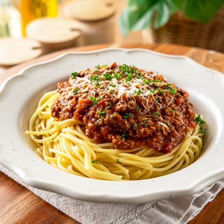

Simple Spaghetti
← Back to Odin Recipes

Description
This simple spaghetti recipe uses a basic tomato sauce and dried pasta.
It’s quick, comforting, and perfect for a weekday dinner.
Ingredients
- 200g dried spaghetti
- 2 tbsp olive oil
- 2 cloves garlic, minced
- 1 can (400g) chopped tomatoes
- 1 tsp dried oregano
- Salt and pepper, to taste
- Grated cheese, to serve (optional)
Steps
- Bring a large pot of salted water to a boil.
- Add the spaghetti and cook according to the package instructions.
- While the pasta cooks, heat olive oil in a pan over medium heat.
- Add the garlic and cook for about 30 seconds, until fragrant.
- Stir in the chopped tomatoes and oregano. Simmer for 5–10 minutes.
- Season the sauce with salt and pepper to taste.
- Drain the spaghetti and add it to the sauce. Toss to coat.
- Serve hot, topped with grated cheese if you like.